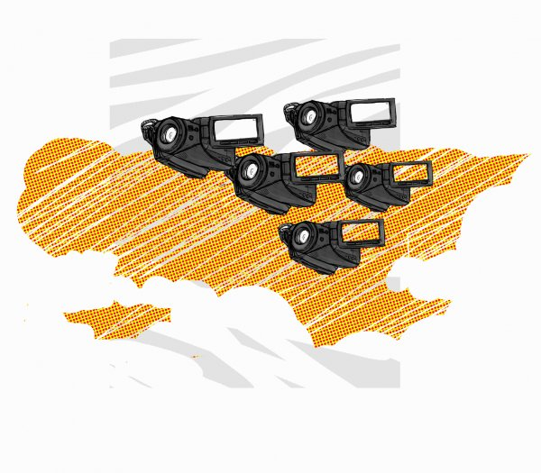

Tässä oppaassa ohjelmatuotanto tapahtuu yhteisöllisen median tuotantoympäristössä. Avoimen median tuotantoympäristöön kuuluvat:
Kevyt tuotantotapa, jolla voit tuottaa sisällöltään kiinnostavaa ja laadukasta ohjelmaa vähäisin ajallisin ja teknisin panostuksin.
Avoimen lähdekoodin ohjelmistot, joilla voit koostaa ohjelman ja tuottaa siihen tulevat ääni- ja graafiset tehosteet.
Avoimet sisällöt ja lisenssit, joiden avulla voit hyödyntää verkon tarjoamia sisältöjä omassa tuotannossa, ja tuoda myös oman ohjelmasi muiden käyttöön.
Verkko- ja yhteisömedian julkaisualustat ja käytännöt, joiden avulla voit julkaista ohjelmasi eri kanavilla ja jakaa sen muiden kanssa.
Sekä tuotantoon että julkaisuun on tarjolla lukuisia vaihtoehtoisia ratkaisuja. Oppaaseen on näiden pohjalta valittu käytännössä toimivaksi todettuja yhdistelmiä, joita suosittelemme käyttöösi.
Internetin mediaominaisuudet alkoivat kehittyä World Wide Webin ja graafisten selainten myötä 1990-luvun alkupuolella, jolloin multimediaa eli video- ja äänitiedostoja alettiin julkaista verkkosivuilla. Alussa median käyttö netissä oli kuitenkin vähäistä, sillä tiedostojen lataaminen vaati julkaisijalta ja käyttäjältä laajaa kaistaa.
Taiteilijat ja aktivistit ovat olleet verkkovideon edelläkävijöitä. Tanskalaisen SuperFlex-taiteilijakollektiivin Superchannel-verkkoalusta tarjosi video- ja radiokanavapalveluja kymmenille eurooppalaiselle yhteisöille jo 1990-luvun lopulla. 1999 käynnistyi myös Indymedia, globaali osallistuvan journalismin ja avoimen julkaisemisen verkosto, jonka puitteissa tuotettiin myös verkkovideota.
2000-luvulla verkkovideon kehitys on ollut räjähdysmäistä. Laajempaan tietoisuuteen internet videoalustana nousi 2005 avatun YouTube -palvelun myötä. Samana vuonna avautui muita suosituksi tulleita videopalveluja kuten Vimeo ja blip.tv. Myös perinteiset mediayhtiöt kiinnostuivat verkkojakelusta ja toivat ohjelmiaan verkkoon VOD (video on demand) -arkistoiksi. Suomen suurin nettitelevisio- ja radiopalvelu YLE Areena avattiin 2007.
2010-luvulla verkkovideo on jo monelle tärkeä itseilmaisun väline ja organisaatioille keskeinen viestinnän muoto. Myös videopalvelujen tehokkuus - videokuvan laatu ja siirtonopeus - on kehittynyt nopeasti ja videopalvelut toistavat jo HD (high definition) -laatuista mediaa.
2000-luvulla verkkokulttuuria on rikastanut suuri joukko sovelluksia, joiden painopiste on käyttäjien tuotannossa ja yhteistyössä:
Blogit (englannin sanoista "web-log"). Blogi on verkossa oleva lehti, päiväkirja tai mielipidepalsta, joka esitetään verkkosivun muodossa. Videoblogit ovat blogin alalaji.
Wikit eli verkkopohjaiset yhteistyöalustat, jonka sisältöä käyttäjät voivat itse muokata haluamallaan tavalla. Tunnetuin wikipalvelu on Wikipedia-ensyklopedia.
Linkitys- ja mediapalvelut, joissa käyttäjät voivat jakaa esimerkiksi linkkilistoja (de.licious, Digg), valokuvia (Flickr) tai videoita (YouTube).
Yhteisöpalvelut, joissa käyttäjät voivat verkostoitua, pitää yllä suhteitaan ja jakaa päivityksiä ja muita tietoja, esimerkiksi Facebook, Twitter ja MySpace.
Näitä sovelluksia ja niihin liittyviä käytäntöjä on ryhdytty kutsumaan nimekkeellä sosiaalinen media. Sosiaalista mediaa luonnehtii käyttäjälähtöinen, yhteisöllinen tuotanto ja jakelu: yhteistyö tiedon ja sisältöjen tuotannossa, sisältöjen kommentointi ja jakaminen, ja sisältöjen filtteröinti esimerkiksi soittolistoiksi tai podcast-lähetyksiksi.
Sosiaalisen, yhteisöllisen median käytännöt kuten vertaistuotanto ja avoin julkaiseminen tukevat mediademokratiaa, jonka osalta 2000-luvulla on puhuttu kansalaisjournalismin noususta. Luovan tuotannon osalta vastaava uusi ilmiö on remix-kulttuuri, jossa valmista media-aineistoa, teoksia ja niiden katkelmia muokataan ja miksataan uusiksi teoksiksi.
Myös video asettuu tähän avoimen julkaisun ja yhteistyön ympäristöön. YouTuben, Vimeon ja Blip.tv:n kaltaisten yleispalvelujen lisäksi verkossa on lukuisia eri kohderyhmien videojakeluun tarkoitettuja palveluita, sekä videon esittämiseen keskittyviä palveluita, kuten esimerkiksi avoin mediasoitin Miro (http://www.getmiro.com). Videon yhteisöllinen tuotanto verkossa on vaikeampaa kuin tekstin, mutta editointisovelluksia tähän kehittää esimerkiksi Kaltura (http://corp.kaltura.com).

There has been error in communication with Booktype server. Not sure right now where is the problem.
You should refresh this page.